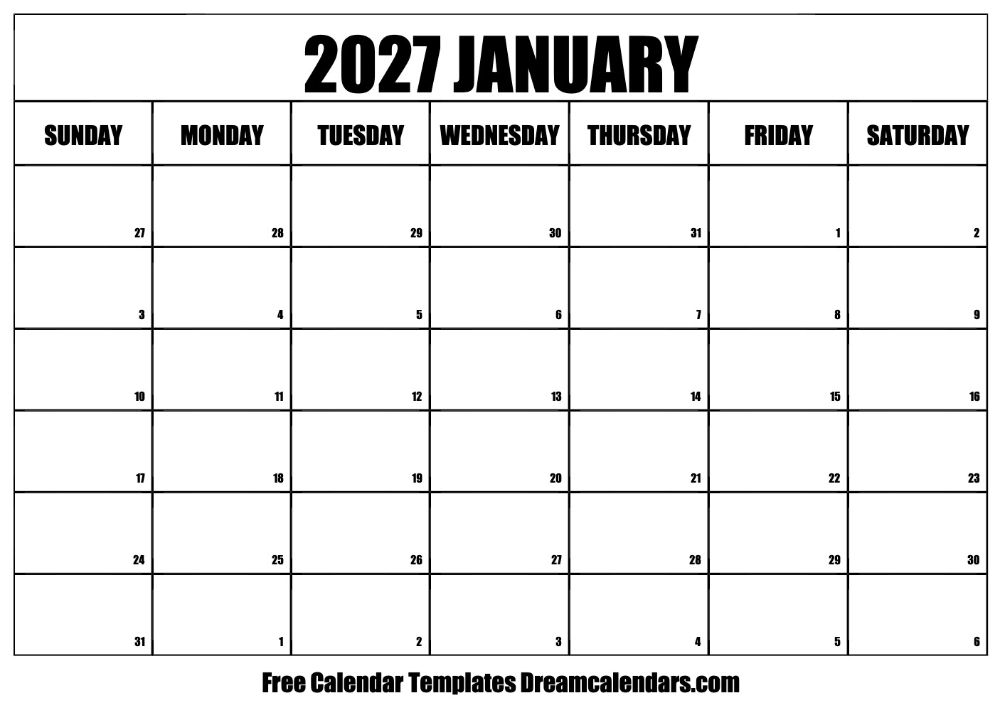
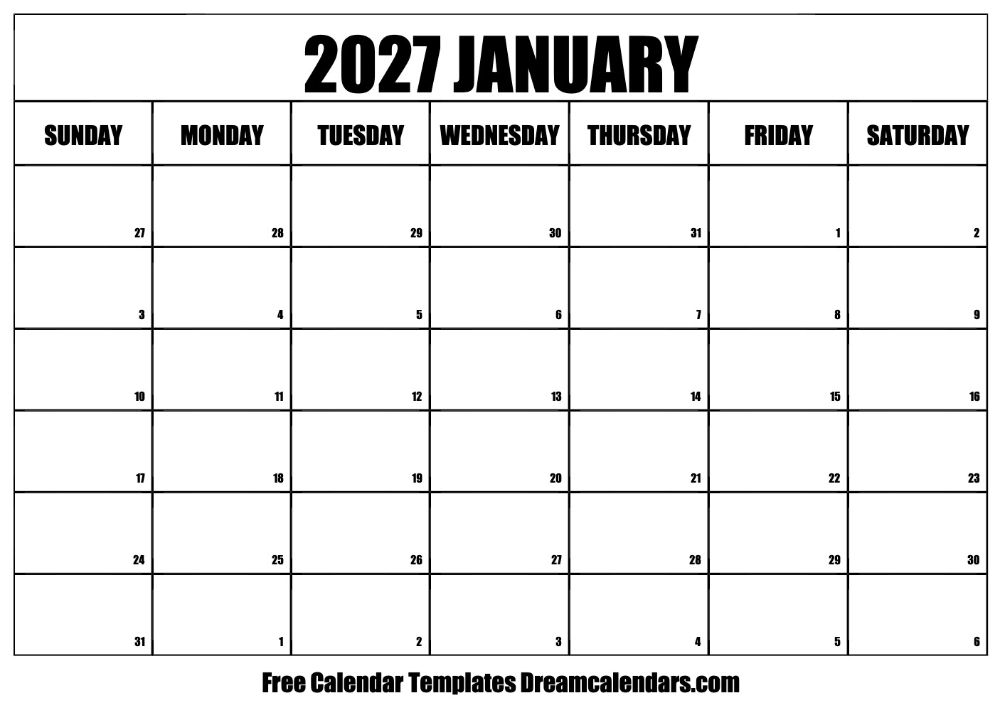

2024 ICES - Short Course
SC03: Seasonal Adjustment and Time Series Analysis
Quarterly time series

Quarterly time series

Monthly time series

half-hourly time series
Half-hourly electricity demand in England and Wales from Monday 5 June 2000 to Sunday 27 August 2000.

make ggplot

Facet wrap to see scale better

Date format
- Having a date column first now plays nice with the R time series packages


Extracting Dates
Lets try to look at a plot by month.

tsbox package functionality

ffp3 uses autoplot

Convert ICNSA series to Quarterly

Calendar Adjustment
Some of the variation seen in seasonal data may be due to simple calendar effects.
 

Population Adjustments
Any data that are affected by population changes can be adjusted to give per-capita data.

Inflation Adjustment Example


Autocovariance
Recall the standard correlation coefficient between two random variables \(X\) and \(Y\)

Autocovariance
For a time series, we can calculate the correlation between \(X_t\) and \(X_{t-1}\) and get the lag-1 autocorrelation
[1] 144[1] 0.9601946
Stationary or not?

Example: Google stock price

ACF: Google stock price

Differenced

Differenced ACF

Antidiabetic drug sales

Antidiabetic drug sales

Antidiabetic drug sales

Corticosteroid drug sales

Corticosteroid drug sales

Corticosteroid drug sales

Corticosteroid drug sales


Example Box-Jenkins fitting method
Lets fit an ARIMA model to the following data:

What are candidate AR/MA orders?

ARIMA(1, 0, 0)

ARIMA(0, 0, 1):

ARIMA(2, 0, 0)

Let’s try it out
Recall how to download data from the FRED:

Clearly need d=1, What about AR/MA/SAR/SMA orders?


Lets try SARIMA(0, 1, 1)(0, 0, 1)

Lets try SARIMA(0, 1, 1)(0, 1, 1)
Might need to add seasonal difference, \(D=1\)

Moderately better, maybe…
Lets try SARIMA(0, 1, 1)(1, 1, 0)

Looks worse!
Example: Australian quarterly beer production:

Example: Australian quarterly beer production:

Example: Australian quarterly beer production:

Example linear filter

Henderson Trend filters

Example trend with 13 term Henderson

Seasonal Filters


Extract Seasonal with 3x5 MA filter